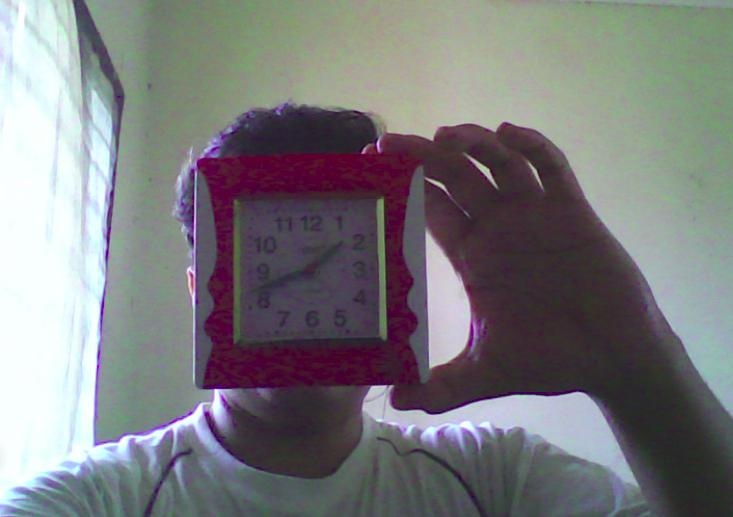

Thresholding Operations using inRange
Goal
In this tutorial you will learn how to:
- Perform basic thresholding operations using OpenCV function cv::inRange
- Detect an object based on the range of pixel values it has
Theory
- In the previous tutorial, we learnt how perform thresholding using cv::threshold function.
- In this tutorial, we will learn how to do it using cv::inRange function.
- The concept remains same, but now we add a range of pixel values we need.
Code
The tutorial code’s is shown lines below. You can also download it from here
#include "opencv2/imgproc.hpp" #include "opencv2/highgui.hpp" #include <iostream> #include <stdlib.h> using namespace std; using namespace cv; void on_low_r_thresh_trackbar(int, void *); void on_high_r_thresh_trackbar(int, void *); void on_low_g_thresh_trackbar(int, void *); void on_high_g_thresh_trackbar(int, void *); void on_low_b_thresh_trackbar(int, void *); void on_high_b_thresh_trackbar(int, void *); int low_r=30, low_g=30, low_b=30; int high_r=100, high_g=100, high_b=100; int main() { Mat frame, frame_threshold; VideoCapture cap(0); namedWindow("Video Capture", WINDOW_NORMAL); namedWindow("Object Detection", WINDOW_NORMAL); //-- Trackbars to set thresholds for RGB values createTrackbar("Low R","Object Detection", &low_r, 255, on_low_r_thresh_trackbar); createTrackbar("High R","Object Detection", &high_r, 255, on_high_r_thresh_trackbar); createTrackbar("Low G","Object Detection", &low_g, 255, on_low_g_thresh_trackbar); createTrackbar("High G","Object Detection", &high_g, 255, on_high_g_thresh_trackbar); createTrackbar("Low B","Object Detection", &low_b, 255, on_low_b_thresh_trackbar); createTrackbar("High B","Object Detection", &high_b, 255, on_high_b_thresh_trackbar); while((char)waitKey(1)!='q'){ cap>>frame; if(frame.empty()) break; //-- Detect the object based on RGB Range Values inRange(frame,Scalar(low_b,low_g,low_r), Scalar(high_b,high_g,high_r),frame_threshold); //-- Show the frames imshow("Video Capture",frame); imshow("Object Detection",frame_threshold); } return 0; } void on_low_r_thresh_trackbar(int, void *) { low_r = min(high_r-1, low_r); setTrackbarPos("Low R","Object Detection", low_r); } void on_high_r_thresh_trackbar(int, void *) { high_r = max(high_r, low_r+1); setTrackbarPos("High R", "Object Detection", high_r); } void on_low_g_thresh_trackbar(int, void *) { low_g = min(high_g-1, low_g); setTrackbarPos("Low G","Object Detection", low_g); } void on_high_g_thresh_trackbar(int, void *) { high_g = max(high_g, low_g+1); setTrackbarPos("High G", "Object Detection", high_g); } void on_low_b_thresh_trackbar(int, void *) { low_b= min(high_b-1, low_b); setTrackbarPos("Low B","Object Detection", low_b); } void on_high_b_thresh_trackbar(int, void *) { high_b = max(high_b, low_b+1); setTrackbarPos("High B", "Object Detection", high_b); }
Explanation
Let’s check the general structure of the program:
Create two Matrix elements to store the frames
Mat frame, frame_threshold;
Capture the video stream from default capturing device.
VideoCapture cap(0);
Create a window to display the default frame and the threshold frame.
namedWindow("Video Capture", WINDOW_NORMAL); namedWindow("Object Detection", WINDOW_NORMAL);
Create trackbars to set the range of RGB values
//-- Trackbars to set thresholds for RGB values createTrackbar("Low R","Object Detection", &low_r, 255, on_low_r_thresh_trackbar); createTrackbar("High R","Object Detection", &high_r, 255, on_high_r_thresh_trackbar); createTrackbar("Low G","Object Detection", &low_g, 255, on_low_g_thresh_trackbar); createTrackbar("High G","Object Detection", &high_g, 255, on_high_g_thresh_trackbar); createTrackbar("Low B","Object Detection", &low_b, 255, on_low_b_thresh_trackbar); createTrackbar("High B","Object Detection", &high_b, 255, on_high_b_thresh_trackbar);
Until the user want the program to exit do the following
cap>>frame; if(frame.empty()) break; //-- Detect the object based on RGB Range Values inRange(frame,Scalar(low_b,low_g,low_r), Scalar(high_b,high_g,high_r),frame_threshold);
Show the images
//-- Show the frames imshow("Video Capture",frame); imshow("Object Detection",frame_threshold);
For a trackbar which controls the lower range, say for example Red value:
void on_low_r_thresh_trackbar(int, void *) { low_r = min(high_r-1, low_r); setTrackbarPos("Low R","Object Detection", low_r); }
For a trackbar which controls the upper range, say for example Red value:
void on_high_r_thresh_trackbar(int, void *) { high_r = max(high_r, low_r+1); setTrackbarPos("High R", "Object Detection", high_r); }
It is necessary to find the maximum and minimum value to avoid discrepancies such as the high value of threshold becoming less the low value.
Results
After compiling this program, run it. The program will open two windows
As you set the RGB range values from the trackbar, the resulting frame will be visible in the other window.
